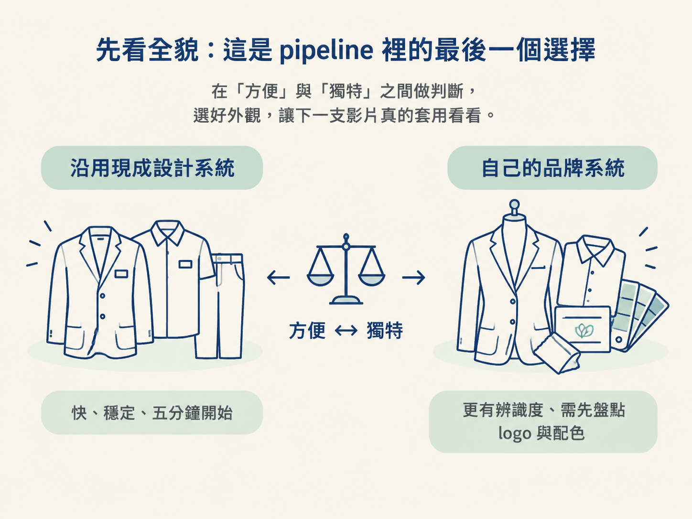
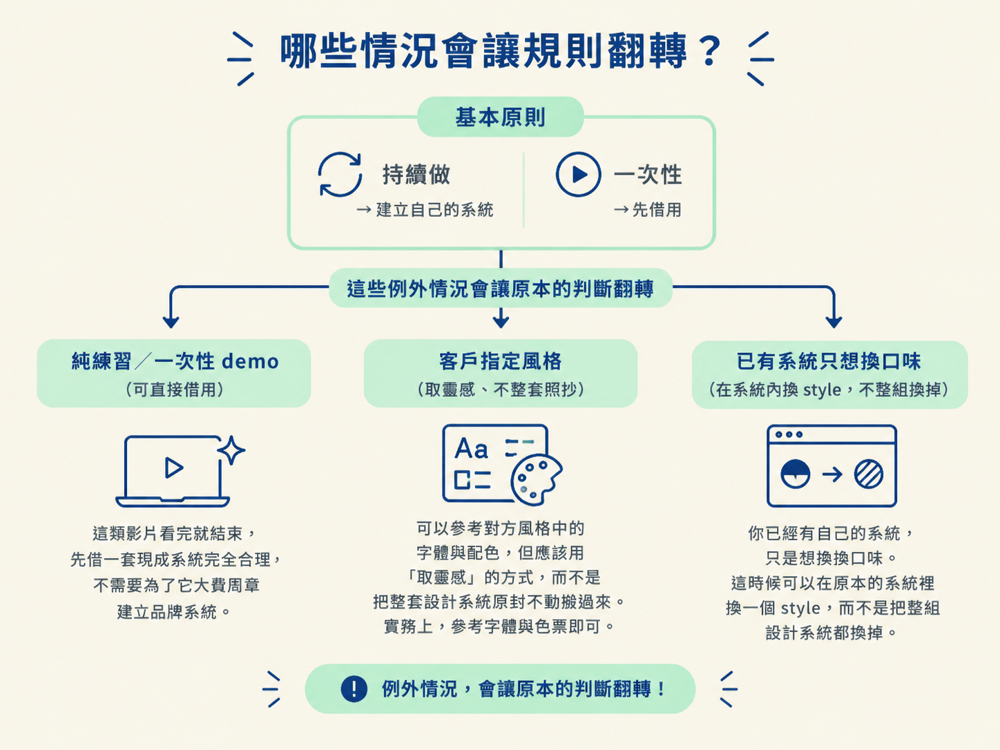

前面你已經知道設計系統是品牌外觀的來源，也學會了怎麼取得、套用，並把它放進 skill。現在來到最後一個關卡：這支影片要直接沿用現成的設計系統，還是先整理一套屬於自己的品牌系統？
這個選擇會影響影片看起來像不像你，也會影響之後能不能快速做出同系列作品。現成系統像一套可以立刻穿上的制服：快、穩定，五分鐘就能開始；自己的品牌系統則像量身訂做的衣服，更有辨識度，但要先盤點 logo、配色與字體。
這一節不重講「什麼是設計系統」，重點是幫你在「方便」與「獨特」之間做判斷，最後把選好的外觀固定下來，讓下一支影片真的套用看看。

取得影片外觀大致有三條可行的路，另外還有一條最好避開。你可以先用下表比較它們在速度、辨識度與風險上的差異。
| 選項 | 適合的情況 | 代價 |
|---|---|---|
| 沿用現成設計系統（例如 Refero Styles 的兩千多套） | 想先跑起來、製作一次性或練習用影片，或還沒整理自己的品牌 | 別人也可能使用同一套，成品不一定完全像你 |
| 用參考影片反推出一套系統 | 喜歡的風格沒有現成檔案，也沒有可用的 prompt | 需要來回調整幾次，最後抓到的味道可能仍帶有原作影子 |
| 整理自己的品牌 DESIGN.md | 已經有 logo、配色與字體，而且會持續製作系列內容 | 一開始要花時間盤點、整理手上的品牌素材 |
| 原樣照抄某個品牌 | 幾乎沒有適合的情況 | 有侵權與觀感風險，尤其是用在客戶作品時 |
簡單說，現成系統適合先把影片做出來；自己的 DESIGN.md 適合讓一支支影片累積成清楚的品牌。真正要避免的，是把別人的整套系統直接搬走，卻把它當成自己的風格。
不確定該走哪條路時，依序問自己以下問題。答案會把你推向適合的選項。
DESIGN.md。這是一次投入，之後每支影片都能沿用。「持續做就建立自己的系統、一次性就先借用」是一個好起點，但不是永遠不變的答案。遇到以下情況時，判斷可能會翻轉。

下次要選之前，可以直接照著這句話檢查：
有品牌素材，而且會持續製作，就整理成自己的 DESIGN.md；沒有品牌素材，又只是練習或一次性影片，就先借一套現成的，但標記成暫用；如果是客戶作品或要公開展示，就借靈感、不照抄；外觀定稿後，再把它收進 skill，讓這次的選擇成為之後可以重複使用的資產。
現在回頭看手上的素材：如果已經有 logo、配色與字體，就先整理出一份初版品牌 DESIGN.md；如果還沒有，就挑一套現成系統，明確標記為暫用。接著在下一支影片實際套用，看看外觀是否一致、是否符合你想要的品牌感。
走完這個節點，你就知道怎麼取得或反推一份 DESIGN.md，也分得出通用 AI 樣板與品牌外觀的差別；至於何時該借用、何時該建立自己的系統、定稿後又該怎麼收進 skill，心裡都會有底。這樣每支影片就不必從零開始，品牌也會像滾雪球一樣，越做越穩。